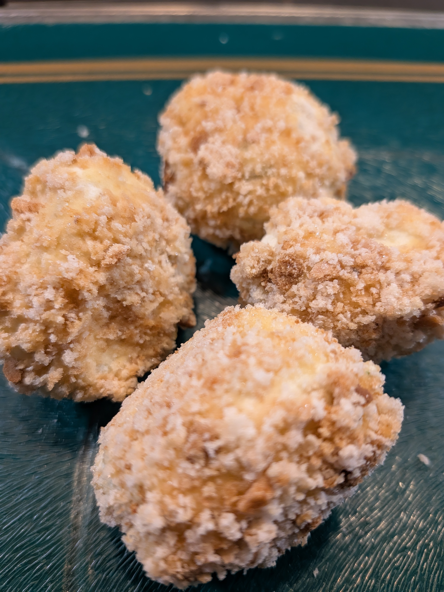

My Christmas Party Food Mission
Last Christmas I struggled to find gluten-free party food that I could enjoy. So this year I decided to make my own!
I'm experimenting with homemade gluten-free party food, including some treats that can be prepared ahead and frozen.
Follow my Christmas party food countdown as I add a new homemade gluten-free recipe each week leading up to Christmas.
Week 1: Mini Stuffed Potato Jackets
With Pancetta and Cheese
These little potato jackets are perfect for Christmas parties, buffets or a tasty snack.
Ingredients
- Small potatoes
- Olive oil
- Salt and pepper
- Pancetta, diced
- Grated cheddar cheese
Method
- Preheat the oven to 180°C.
- Rub the potatoes with olive oil and season.
- Bake for 35–45 minutes or until cooked.
- Allow to cool slightly and cut in half.
- Carefully scoop out the potato flesh.
- Fry the pancetta until crispy.
- Mix the potato flesh with the pancetta and cheese.
- Spoon the mixture back into the potato skins.
- Return to the oven for 10–15 minutes until golden and heated through.
Freezer Friendly
These can be frozen after filling, before the final bake. Allow to cool, pack into a freezer-safe container and freeze.
Bake from frozen, allowing additional time until piping hot all the way through.
Check ingredient labels to make sure everything you use is gluten-free.
Crispy Gluten-Free Boursin Cheese Balls

Crispy on the outside and deliciously creamy on the inside. These homemade Boursin cheese balls are perfect for Christmas party food and can be prepared in advance and frozen.
Ingredients
- 1 round of Boursin cheese
- Gluten-free plain flour
- 1 beaten egg
- Gluten-free breadcrumbs
- Oil for frying
Method
- Place the Boursin in the freezer for 10 minutes to firm it up.
- Divide the cheese into small portions and roll into balls.
- Coat each ball in gluten-free flour, followed by beaten egg and then gluten-free breadcrumbs.
- Carefully fry in hot oil for approximately 5 minutes, until golden and crispy, removing before the cheese starts to escape.
- Drain on kitchen paper and serve warm.
Freezer Friendly
These cheese balls can be frozen before frying. Cook straight from frozen, allowing approximately 2 extra minutes and ensuring they are piping hot throughout.
IBS Girl Tip
I use my own homemade gluten-free breadcrumbs. They are a great way to use up leftover gluten-free bread.
View my homemade gluten-free breadcrumbs recipe.
Always check ingredient labels to make sure everything you use is gluten-free.
Coming Next Week
Another homemade gluten-free Christmas party food recipe will be joining the collection!